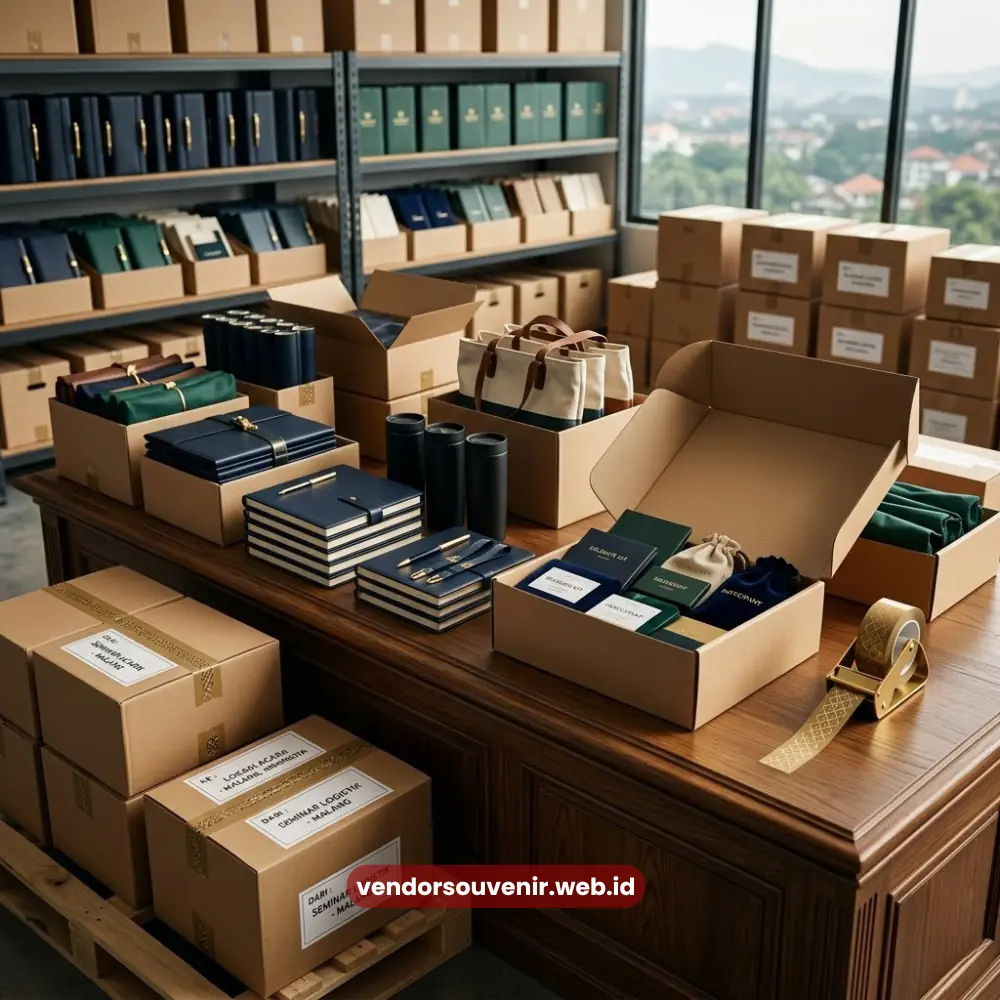

Daftar Isi
Perlengkapan seminar kantor partai besar merujuk pada pemesanan perlengkapan seminar dalam jumlah besar, biasanya untuk acara dengan ratusan hingga ribuan peserta seperti seminar nasional, rapat kerja tahunan, atau pelatihan massal lintas cabang perusahaan.
Kebutuhan ini menuntut standarisasi kualitas yang ketat, konsistensi jumlah stok, serta perencanaan waktu produksi yang lebih matang dibanding seminar berskala kecil pada umumnya.
- Seminar skala besar membutuhkan standarisasi kualitas dan jumlah yang konsisten di setiap item.
- Perencanaan waktu produksi harus dimulai lebih awal untuk menghindari keterlambatan.
- Efisiensi biaya per unit umumnya meningkat seiring bertambahnya volume pemesanan.
- Koordinasi jumlah peserta yang akurat menjadi dasar utama perencanaan kebutuhan.
Apa Tantangan Menyiapkan Perlengkapan Seminar Kantor Partai Besar?
Menyiapkan perlengkapan seminar dalam jumlah besar memiliki kompleksitas yang berbeda dibandingkan acara berskala kecil.
Tantangan utama biasanya terletak pada konsistensi kualitas di setiap unit, mengingat produksi dalam volume besar rentan terhadap variasi hasil cetak, warna, maupun kualitas material apabila proses produksinya tidak diawasi secara ketat.
Selain aspek kualitas, aspek waktu turut menjadi tantangan tersendiri.
Produksi dalam jumlah besar membutuhkan proses pengerjaan yang lebih panjang, mulai dari tahap desain, pencetakan, hingga pengemasan akhir.
Ketidaktepatan estimasi waktu produksi berisiko menyebabkan keterlambatan pengiriman yang berdampak langsung pada kesiapan acara.
Bagaimana Menjaga Standarisasi Kualitas untuk Pemesanan dalam Jumlah Besar?
Standarisasi kualitas pada pemesanan skala besar bergantung pada kejelasan spesifikasi teknis sejak awal, mencakup jenis material, ukuran, warna, hingga teknik cetak yang digunakan pada seluruh unit produksi.
Spesifikasi yang detail dan terdokumentasi dengan baik akan meminimalkan risiko perbedaan hasil antar batch produksi.
Proses quality control secara bertahap juga berperan penting dalam menjaga konsistensi hasil akhir.
Pengecekan sampel produksi di awal, tengah, dan akhir proses membantu memastikan seluruh unit yang dihasilkan memenuhi standar yang telah disepakati, sehingga peserta di berbagai lokasi atau sesi acara tetap menerima kualitas perlengkapan yang setara.
Kapan Sebaiknya Perlengkapan Seminar Skala Besar Mulai Dipersiapkan?
Semakin besar jumlah pesanan, semakin panjang pula waktu yang dibutuhkan untuk keseluruhan proses produksi hingga pengiriman.
Sebagai prinsip umum, persiapan perlengkapan seminar skala besar idealnya dimulai jauh sebelum tanggal pelaksanaan acara, guna memberi ruang cukup untuk proses desain, revisi, produksi, dan kontrol kualitas tanpa terburu-buru.

Proses Pengemasan Seminar Kit dalam Jumlah Besar
Perencanaan yang dimulai lebih awal juga memberikan fleksibilitas apabila terjadi penyesuaian jumlah peserta di tengah proses persiapan.
Panitia acara sebaiknya mengunci estimasi jumlah peserta secepat mungkin agar volume produksi dapat direncanakan secara akurat sejak tahap awal.
Bagaimana Efisiensi Biaya Bekerja pada Pemesanan Volume Besar?
Pada umumnya, biaya produksi per unit cenderung menurun seiring bertambahnya volume pemesanan, mengingat biaya tetap seperti desain dan setup produksi terbagi ke jumlah unit yang lebih banyak.
Prinsip ini membuat pemesanan perlengkapan seminar skala besar relatif lebih efisien secara biaya per peserta dibandingkan pemesanan dalam jumlah kecil dengan spesifikasi serupa.
Efisiensi ini tetap perlu diimbangi dengan perencanaan anggaran yang realistis, mengingat volume besar tetap membutuhkan investasi awal yang signifikan.
Perhitungan total anggaran, bukan hanya harga per unit, menjadi dasar yang lebih tepat dalam menentukan kelayakan skema pemesanan bagi perusahaan.
Perlengkapan seminar kantor partai besar menuntut perencanaan matang, standarisasi kualitas ketat, dan estimasi waktu yang realistis agar acara berskala besar tetap berjalan lancar.
Semakin awal persiapan dimulai, semakin terjaga pula kualitas dan efisiensi biaya yang diperoleh perusahaan.

Solusi Souvenir Partai Besar dari Vendor Terpercaya
Punya Acara Skala Besar? Kami Siap Membantu!
Kami berpengalaman menangani produksi souvenir dan seminar kit dalam partai besar.
Dapatkan harga yang lebih hemat, jaminan kualitas pada tiap unit, serta pengiriman tepat waktu.
Amankan slot produksi Anda dari sekarang!
FAQ Seputar Perlengkapan Seminar Partai Besar
Berapa jumlah minimum yang tergolong pemesanan partai besar?
Batasan ini dapat bervariasi tergantung jenis item, namun umumnya pemesanan dalam ratusan unit ke atas sudah tergolong kategori partai besar.
Apakah kualitas tetap terjaga meski dipesan dalam jumlah besar?
Kualitas tetap dapat terjaga apabila spesifikasi teknis jelas dan proses quality control dilakukan secara konsisten di setiap tahap produksi.
Apakah revisi desain masih memungkinkan setelah proses produksi dimulai?
Revisi umumnya masih memungkinkan sebelum tahap produksi massal dimulai, sehingga penting memastikan desain final disetujui sejak awal proses.
Maroon Souvenir
Partner Corporate Gift terpercaya di Indonesia. Berpengalaman melayani ratusan perusahaan sejak 2018.
Lihat Portofolio Kami